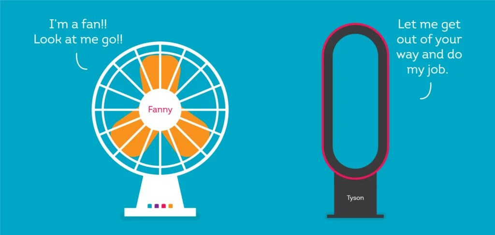
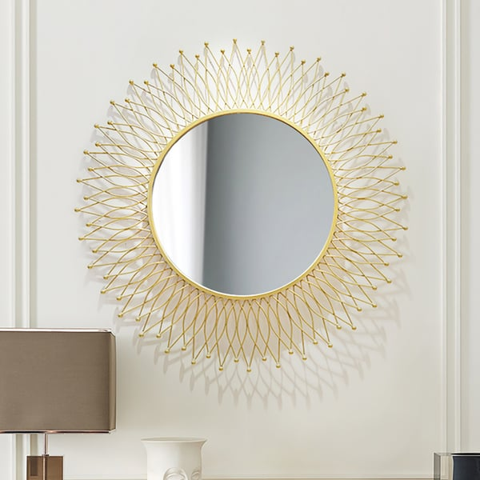
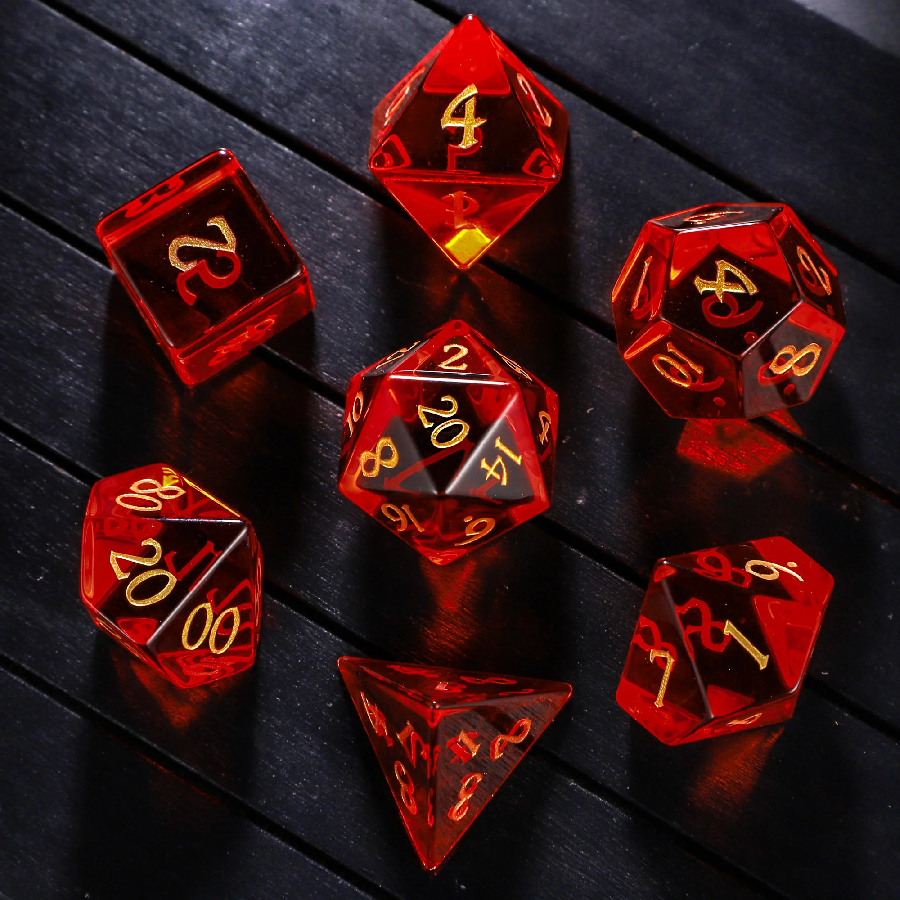
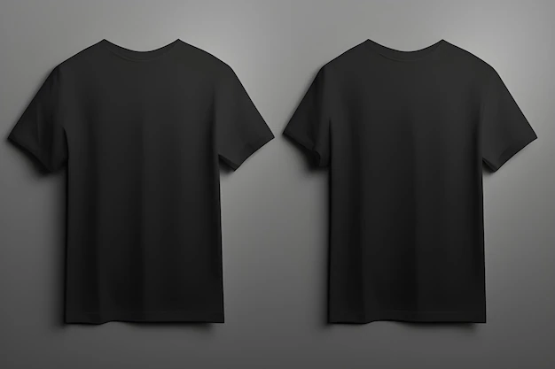
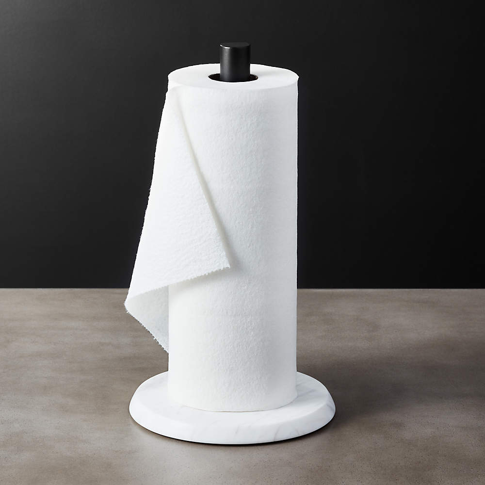

Good Design is Innovative
The possibilities for innovation are not, by any means, exhausted. Technological development is always offering new opportunities for innovative design. But innovative design always develops in tandem with innovative technology, and can never be an end in itself.

Good Design Makes a Product Useful
A product is bought to be used. It has to satisfy certain criteria, not only functional, but also psychological and aesthetic. Good design emphasizes the usefulness of a product whilst disregarding anything that could possibly detract from it.

Good Design is Aesthetic
The aesthetic quality of a product is integral to its usefulness because products we use every day affect our person and our well-being. But only well-executed objects can be beautiful.

Good Design Makes a Product Understandable
It clarifies the product's structure. Better still, it can make the product talk. At best, it is self-explanatory.

Good Design is Unobtrusive
Products fulfilling a purpose are like tools. They are neither decorative objects nor works of art. Their design should therefore be both neutral and restrained, to leave room for the user's self-expression.

Good Design is Honest
It does not make a product more innovative, powerful or valuable than it really is. It does not attempt to manipulate the consumer with promises that cannot be kept.

Good Design is Long-Lasting
It avoids being fashionable and therefore never appears antiquated. Unlike fashionable design, it lasts many years - even in today's throwaway society.
Good Design is Thorough Down to the Last Detail
Nothing must be arbitrary or left to chance. Care and accuracy in the design process show respect towards the user.
Good Design is Environmentally-Friendly
Design makes an important contribution to the preservation of the environment. It conserves resources and minimizes physical and visual pollution throughout the lifecycle of the product.
Good Design is as Little Design as Possible
Less, but better - because it concentrates on the essential aspects, and the products are not burdened with non-essentials.